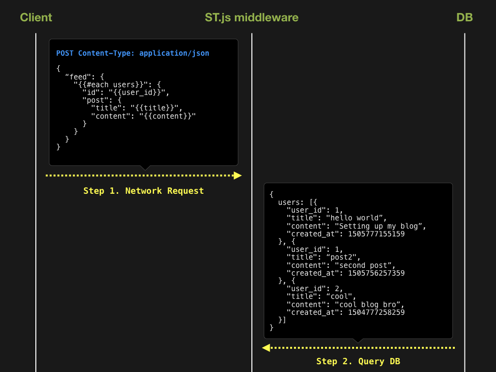
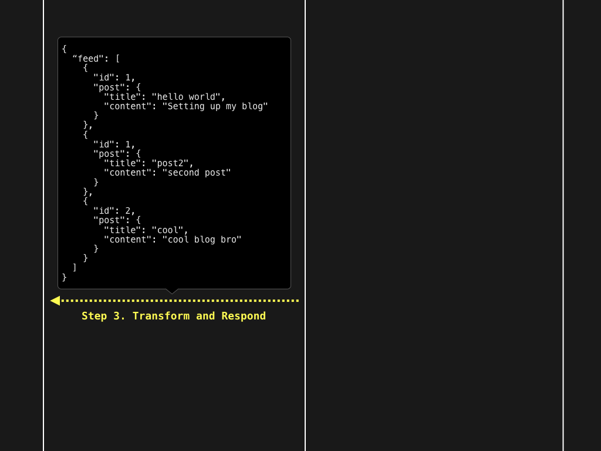

Transform

Features
1. Select
Select a JSON object or its subtree that matches your filter function
Step 1. Take any JSON object
var data = {
"links": [
{ "remote_url": "http://localhost" },
{ "file_url": "file://documents" },
{ "remote_url": "https://blahblah.com" }
],
"preview": "https://image",
"metadata": "This is a link collection"
}
Step 2. Find all key/value pairs that match a selector function
var sel = Transform.select(data, function(key, val) {
return /https?:/.test(val);
})
Step 3. Once selected, you can make queries.
var keys = sel.keys();
// [
// "remote_url",
// "remote_url",
// "preview"
// ]
var values = sel.values();
// [
// "http://localhost",
// "https://blahblah.com",
// "https://image"
// ]
var paths = sel.paths();
// [
// "[\"links\"]",
// "[\"links\"]",
// ""
// ]
2. Transform
Transform any JSON with a declarative template, also in JSON.
Step 1. Take any JSON object
var data = {
"title": "List of websites",
"description": "This is a list of popular websites"
"data": {
"sites": [{
"name": "Google",
"url": "https://google.com"
}, {
"name": "Facebook",
"url": "https://facebook.com"
}, {
"name": "Twitter",
"url": "https://twitter.com"
}, {
"name": "Github",
"url": "https://github.com"
}]
}
}
Step 2. Select and transform with a template JSON object
var sel = Transform.select(data, function(key, val){
return key === 'sites';
})
.transformWith({
"items": {
"{{#each sites}}": {
"tag": "<a href='{{url}}'>{{name}}</a>"
}
}
})
Step 3. Get the result
var keys = sel.keys();
// [
// "tag",
// "tag",
// "tag",
// "tag"
// ]
var values = sel.values();
// [
// "<a href='https://google.com'>Google</a>",
// "<a href='https://facebook.com'>Facebook</a>",
// "<a href='https://twitter.com'>Twitter</a>",
// "<a href='https://github.com'>Github</a>"
// ]
var objects = sel.objects();
// [
// {
// "tag": "<a href='https://google.com'>Google</a>"
// }, {
// "tag": "<a href='https://facebook.com'>Facebook</a>"
// }, {
// "tag": "<a href='https://twitter.com'>Twitter</a>"
// }, {
// "tag": "<a href='https://github.com'>Github</a>"
// }
// ]
var root = sel.root();
// {
// "items": [{
// "tag": "<a href='https://google.com'>Google</a>"
// }, {
// "tag": "<a href='https://facebook.com'>Facebook</a>"
// }, {
// "tag": "<a href='https://twitter.com'>Twitter</a>"
// }, {
// "tag": "<a href='https://github.com'>Github</a>"
// }]
// }
How Does It Work?
-
st.jsis a library that adds a couple of powerful methods to JavaScript's native JSON. -
So you can simply use it with the syntax
Transform.select(...).transform(...) -
The library is just a
single file, made up of
stateless functions, withNO dependency. -
Which makes it effortless to
embed anywherewithout hassle. (Currently used in various environments including iOS, Android, node.js, browser, etc.)
What Can I Use It For?
JSON powers almost everything in the world.
Being able to bend any JSON to your will means you can do all kinds of
magical things
1. Declarative JSON API Template
Build JSON using a simple, human-readable, and declarative template
instead of manually coding it.
Visit GithubOld way: Manually construct object
// app.js
app.get('/', function (req, res) {
var response = {}
response["current_user"] = {
username: "@" + req.user.username,
firstname: req.user.name.split(' ')[0],
lastname: req.user.name.split(' ')[1]
}
var transformed_posts = db.posts.map(function(post){
return {
slug: post.slug
permalink: "https://blahblahblah.blahblah/" + post.slug,
post_title: post.title,
post_content: post.content
}
})
response["posts"] = transformed_posts
res.json(response)
})
New way: Declarative approach with st.js
// app.js
app.get('/', function (req, res) {
res.json(Transform.select(require('./template.json'))
.transform({user: req.user, posts: db.posts})
.root())
})
// template.json
{
"current_user": {
"username": "@{{user.username}}",
"firstname": "{{user.name.split(' ')[0]}}",
"lastname": "{{user.name.split(' ')[1]}}"
},
"posts": {
"{{#each posts}}": {
"slug": "{{slug}}",
"permalink": "https://blahblahblah.blahblah/{{slug}}",
"post_title": "{{title}}",
"post_content": "{{content}}"
}
}
}
2. Parse JSON like never before
Parse JSON anywhere, both frontend and backend, as easy as using
Visit GithubJSON.stringify or JSON.parse
3. JSON as a JSON Query Language
Make complex API queries purely written in JSON.
Since templates in Transform are written in JSON, you can pass them around
anywhere just like any other data object.
Notice we're not creating some new query language, it's just JSON. No
convoluted infrastructure to set up!
Visit Github

4. App as Data
Templates are normally used for views
But the cool thing about JSON is it can be used to declaratively
represent ANYTHING from Model to View to Controller.
What if we set executable functions as leaf nodes of an object,
select & transform it, and then auto-trigger the resolved
function?
We have built a router in JSON!
Basically, the entire router logic is represented as a piece of data.
Browser
var rpc = {
name: "add",
args: [2,3,1]
}
fetch("http://localhost:3000", {
method: "POST",
headers: {
'Accept': 'application/json',
'Content-Type': 'application/json'
},
body: JSON.stringify(rpc)
).then(function(res) {
console.log(res.json());
})
Server
// router.json
[{
"{{#if 'name' in this}}": [{
"{{#if name === 'add'}}": 'add_service'
}, {
"{{#elseif name === 'subtract'}}": [{
"{{#if args.length === 2}}": 'subtract_service'
}, {
"{{#else}}": 'error_service'
}]
}]
}, {
"{{#else}}": 'error_service'
}]
// express server
app.post('/', (req, res) => {
const Services = {
add_service: function(){
return Array.prototype.slice
.call(arguments)
.reduce((a,b) => {
return a+b;
}, 0)
},
subtract_service: function() {
return arguments[0] - arguments[1]
},
error_service: function() {
return 'error';
}
}
const name = Transform.transform(require('./router.json'), req.body);
res.json(Services[name].apply(this, req.body.args));
});
5. Routerless Server
Let's take the router example from right above. Since our router logic
is just a JSON (
router.json), we don't even need it on
the server side.
What if we DON'T keep
router.json on the server, but send
it from the browser?
Browser
var router = [{
"{{#if 'name' in this}}": [{
"{{#if name === 'add'}}": 'add_service'
}, {
"{{#elseif name === 'subtract'}}": [{
"{{#if args.length === 2}}": 'subtract_service'
}, {
"{{#else}}": 'error_service'
}]
}]
}, {
"{{#else}}": 'error_service'
}];
var rpc = {
name: "add",
args: [2,3,1],
router: router
}
fetch("http://localhost:3000", {
method: "POST",
headers: {
'Accept': 'application/json',
'Content-Type': 'application/json'
},
body: JSON.stringify(rpc)
).then(function(res) {
console.log(res.json());
})
Server
// express server
app.post('/', (req, res) => {
const Services = {
add_service: function(){
return Array.prototype.slice
.call(arguments)
.reduce((a,b) => {
return a+b;
}, 0)
},
subtract_service: function() {
return arguments[0] - arguments[1]
},
error_service: function() {
return 'error';
}
}
const name = Transform.transform(req.body.router, req.body);
res.json(Services[name].apply(this, req.body.args));
});
What's going on here?
We are looking at a server WITHOUT a router.
Instead of implementing a router on the server, we send the router
itself as part of a network request!
This type of JSON-powered portability provides extreme flexibility
when creating interfaces for microservices and RPC endpoints
Also, remember that you can bake
validation, conditionals, loops, etc. all
in a single JSON IPC/RPC call, which makes it extremely powerful and
efficient.
6. Build your OWN Turing complete JSON markup language!
If you read this far, you may feel like you could implement
practically any programming concept in a declarative manner, using
JSON.
This is because Transform.js is a low level building block for creating a
Turing Complete JSON markup language
st.js is the core JSON parser that powers
Jasonette, a framework that
lets you build native iOS/Android apps by writing nothing but a JSON
markup.
But Jasonette is just one implementation.
Want to build your own turing complete JSON markup language?
Learn more about how Jasonette implements programming concepts by
reading
this blog post, and build your own using Transform.js!
How to use
In a browser
<script src="st.js"></script>
<script>
var parsed = Transform.select({ "items": [1,2,3,4] })
.transformWith({
"{{#each items}}": {
"type": "label", "text": "{{this}}"
}
})
.root();
</script>
In node.js
Install through npm:
$ npm install stjs
Use
const Transform = require('@xiddig/transform);
const parsed = Transform.select({ "items": [1,2,3,4] })
.transformWith({
"{{#each items}}": {
"type": "label", "text": "{{this}}"
}
})
.root();